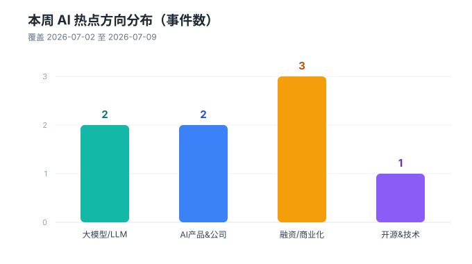
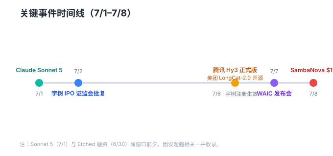
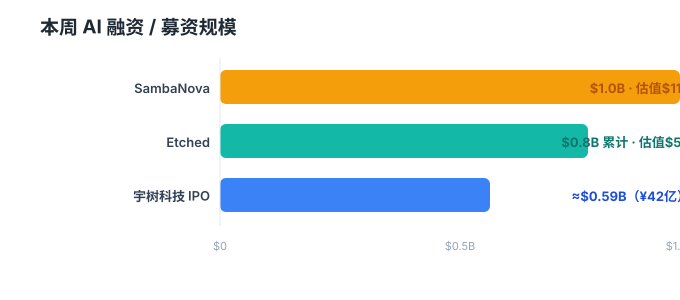

AI 周报 ｜ 2026年7月2日–7月9日
本期关键词：自主 · 落地
国产算力跑通开源基础模型、推理芯片融资再创新高、人形机器人冲刺 A 股、头部厂商集体强化 Agent 能力——本周 AI 圈的主线，是从「能力秀肌肉」转向「把能力真正用起来」。

一、本周速览（简报）
🔹 大模型 / LLM
- 腾讯混元 Hy3 正式版发布（7/6）：在 4 月开源的 Hy3 preview 基础上迭代，重点强化 Agent（智能体）能力，复杂推理、指令遵循、代码生成等维度较 Hy2 大幅提升。模型已接入元宝、WorkBuddy 等腾讯核心 AI 业务，并上线免费 Agent 功能。这是姚顺雨出任首席 AI 科学家、重建混元团队后的首个正式版旗舰模型。（来源：财新、新浪、凤凰网）
- Anthropic Claude Sonnet 5 发布（7/1，窗口前夕）：定位 Sonnet 系列中「智能体 AI 表现最强」，可自主调用浏览器与终端工具，已接入 Claude Code 与 Claude Platform。（来源：IT之家）
🔹 AI 产品 & 公司
- 元宝接入 Hy3 并上线免费 Agent（7/6）：腾讯将新模型能力直接产品化，免费 Agent 成为面向 C 端的差异化抓手。
- 2026 世界人工智能大会（WAIC）发布会（7/7）：大会定于 7/17–7/20 在上海举行，主题「智能伙伴 共创未来」，首次「三地四馆」联动；展览面积首破 10 万㎡，1100+ 企业、3000+ 新品、140+ 论坛，智算与具身智能两大赛道各汇聚 200+ 企业。（来源：新浪、搜狐、第一财经、IT之家）
🔹 融资 / 商业化
- SambaNova 完成 10 亿美元 F 轮首关，估值 110 亿美元（7/8）：由 General Atlantic 领投，距 2 月 3.5 亿美元 E 轮仅 5 个月，凸显 AI 推理芯片资本热度。此前曾有英特尔拟 16 亿美元收购的传闻。（来源：TechCrunch、CNBC）
- 宇树科技科创板 IPO 注册生效（7/2 证监会批复，7/6 上交所状态更新）：有望成为「A股人形机器人第一股」，从受理到注册生效仅 104 天，创科创板预先审阅机制最快纪录，拟募资 42 亿元。（来源：澎湃、新浪、中青报）
- （窗口前夕）Etched 累计融资 8 亿美元、估值约 50 亿美元（6/30）：Transformer 专用芯片 Sohu 即将交付，已签超 10 亿美元预售合同。（来源：电子工程专辑）
🔹 开源 & 技术
- 美团 LongCat-2.0 正式开源（7/6）：业界首个完全基于国产算力芯片完成训练与推理的基础大模型，总参数 1.6T、平均激活约 48B，引入 LongCat 稀疏注意力与 N-gram Embedding 强化长上下文与代码能力；已在 GitHub、Hugging Face 发布。同日华为昇腾、摩尔线程、沐曦宣布完成推理适配。（来源：财新、新浪）

二、亮点深读
深读 1 ｜ 美团 LongCat-2.0：国产算力跑通基础大模型的「开源样本」
过去一年，国内大模型的话语权多建立在「用谁的卡」之上。LongCat-2.0 的意义不在于参数规模（1.6T 总参、48B 激活在万亿俱乐部里并不算最激进），而在于它把「国产算力可训练并推理基础模型」从口号变成了可复现的开源事实：训练与推理全链路基于国产芯片，且华为昇腾、摩尔线程、沐曦三家在同一天宣布适配。
对开发者而言，这意味着三件事：① 在合规与供应链层面，具备了一条不依赖海外先进制程的备选路径；② 开源权重 + 国产硬件适配，降低了本地化部署门槛；③ 它把「国产算力是否够用」的争论，从 PPT 拉到了 benchmark 与真实推理负载上。
当然，开源只是第一步。模型能否在生态（工具链、微调范式、社区贡献）上形成正循环，才是决定它能否真正成为「样本」的关键。本周的发布更像是发令枪，而非终局。
深读 2 ｜ SambaNova 110 亿美元估值背后：推理芯片成了新战场
SambaNova 在 5 个月内连融两轮（E 轮 3.5 亿、F 轮首关 10 亿），估值冲到 110 亿美元，清晰传递了一个信号：AI 资本的重心正从「训练」向「推理」迁移。当模型能力趋同、推理成本成为商业化最大变量时，谁能把单位 token 的成本与延迟打下来，谁就握住了下一阶段的定价权。
这也解释了为何 Etched（专用 Transformer 芯片）、高通收购 Modular（AI 软件栈）等动作密集出现——大家都在赌「推理侧」会诞生下一个英伟达级的机会。对创业公司而言，正面硬刚训练 GPU 几乎无胜算，但在推理专用架构、软硬协同、垂直场景优化上，仍有结构性窗口。

三、下周关注
- WAIC 2026（7/17–7/20）：预计将有大量新品首发与政策信号，建议重点追踪具身智能与智算基础设施发布。
- 宇树科技正式招股：人形机器人第一股定价与认购热度，将成为观察具身智能资本情绪的标尺。
- 腾讯 Hy3 / 美团 LongCat-2.0 实测对比：社区 benchmark 与真实业务落地数据值得持续跟进。
本周报覆盖 2026-07-02 至 2026-07-09 公开报道，来源详见各条目。部分「窗口前夕」事件（7/1、6/30）因与本周议题强相关一并收录。内容由 Content Creator 整理，如需 HTML 嵌入版或社媒缩略版可随时告知。